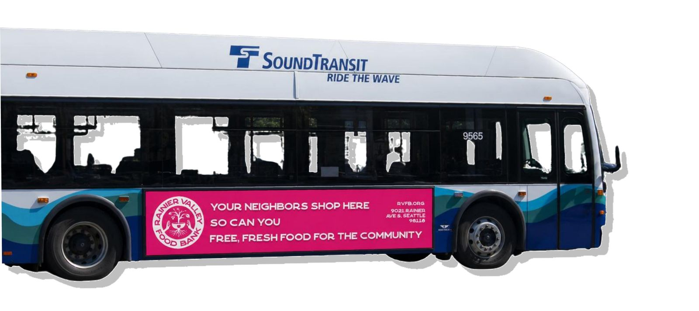
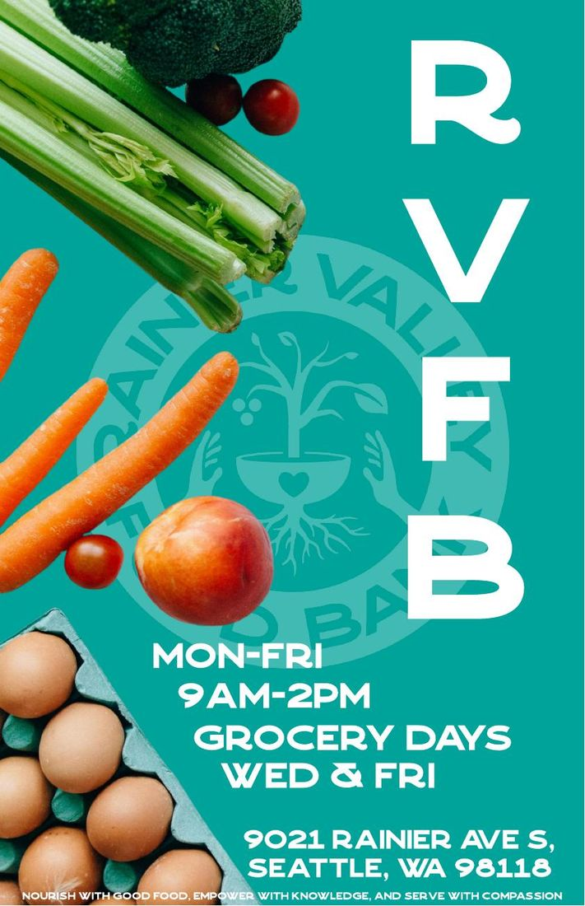
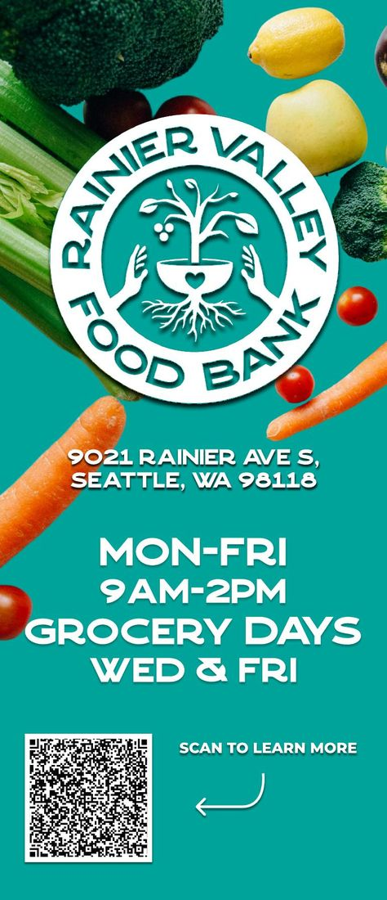
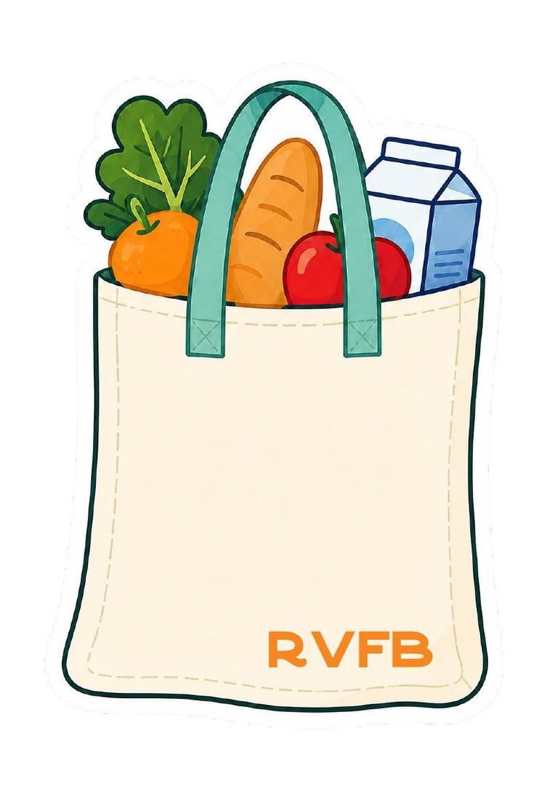
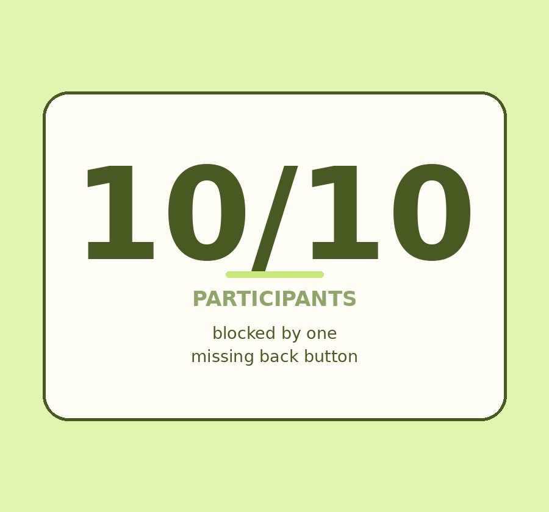
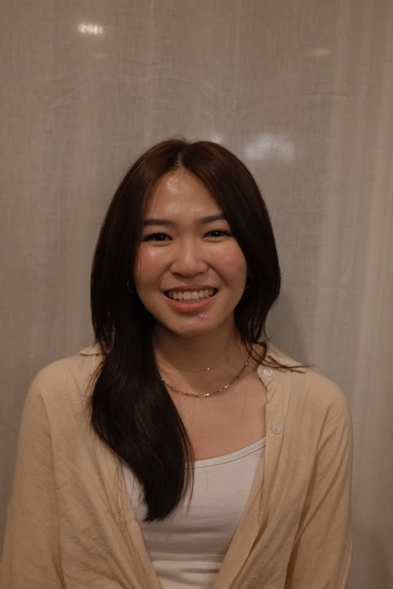

Selected work
Hover to preview



Covalence × Rainier Valley Food Bank
Neighbors who qualified for a food bank three blocks away weren't showing up. Not a supply problem — a trust problem. Two quarters of fieldwork, then a physical outreach system the organization is now pricing with King County Metro.


Loko — collaboration for local business
Café owners wanted to collaborate and couldn't find each other. Five DMs, an email, a Reddit post, no replies. I'd worked behind the counter, so I went back with a research protocol — and designed swipe-to-collaborate for small businesses.

Hinge — onboarding & dealbreakers
Ten think-aloud sessions on Hinge's new-user experience. Every single participant hit the same wall: there's no back button during onboarding. We turned that — and seven other issues — into a prioritized fix list ranked by how many users each one actually affected.
About me

Hi there, I'm Wenyi :)
I am a product designer and UX researcher recently graduated from the University of Washington Seattle with a B.S. in Human-Centered Design & Engineering. My approach combines user research, storytelling, and visual crafts to turn human insights into products that support users. As I continue learning and growing, I'm excited to bring care, curiosity, and purpose into design work that creates positive impact.
Beyond design, I love creating content for social media, editing videos, surrounding myself with people I love, and exploring new places that remind me to appreciate the little things in life. I carry that same sense of care, curiosity, and love into the way I design.
Currently Looking for product design and UX research roles — and always up for a coffee. Most of what I notice off the clock ends up in the playground.
Skills
Highlighted are the ones I lean on most.
ResearchExperience
Product Designer, UX Researcher & Project Manager
Covalence × Rainier Valley Food Bank. Led the visual identity and prototype suite, ran recruitment and multilingual survey distribution, and project-managed the phase where research became artifacts.
Result Won the Capstone Engagement award. RVFB is pricing transit advertising with King County Metro. Case study →
Creative Director & Marketing
Student-led engineering club at UW. Built the chapter's visual presence and ran marketing across events and social.
Result The longest-running design practice on this page — and where most of my instinct for brand and community came from.
UX Experience & UX Researcher
Hinge onboarding and dealbreakers. Moderated and took notes across think-aloud sessions with ten participants, then coded and affinity-mapped the results.
Result Three findings and eight recommendations ranked by how many users each issue affected. Case study →
Product Design & Project Lead
Loko — a collaboration platform for independent local businesses. Led product design and the team, ran café field studies and co-design sessions.
Result Ten screens, a service blueprint, and the profile-depth finding that came out of user testing. Case study →
Let's make something reachable
I'm looking for product design and UX research roles. Always happy to talk about community-centred work, research methods, or coffee.